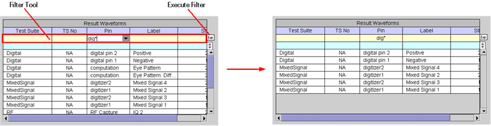
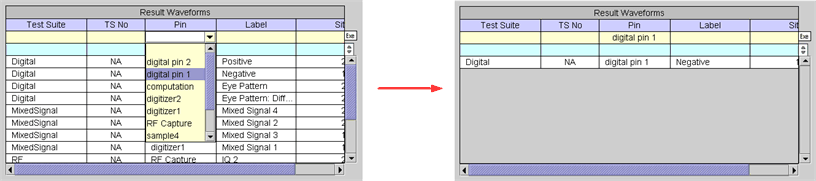
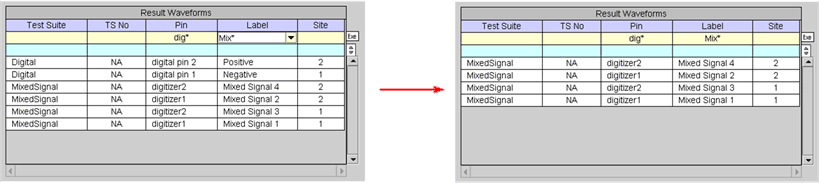
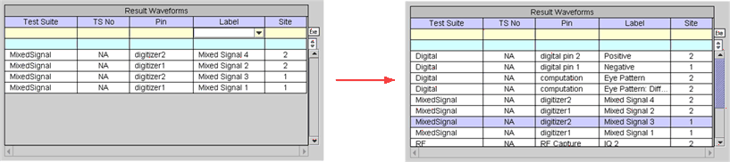
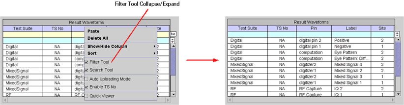

Filter Tool
The filter function in the Waveform Navigator Tool allows you to view only those waveforms corresponding to the filter criteria. You simply input a string in the filter row under the table heading of choice by typing it in or selecting it from the drop down list, then click the Exe button on the right side of the filter tool above the scroll bar as shown in the following examples. Note that the filter is case sensitive.


You can also input strings in multiple columns of the filter tool. In this case, the table will be filtered by the conjunction (AND) of the strings as shown in the following example.

To clear the Filter Tool, click in the cell that contains a string, then either click the right mouse button and select the "blank" row from the drop down list, or simply click the Exe button.

The filter tool can be collapsed by clicking the right mouse button, without a waveform selected, then clearing the Filter Tool check box as shown in the following example.
